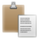

Zwischenablage
Dieser Artikel wurde für die folgenden Ubuntu-Versionen getestet:
Dieser Artikel ist größtenteils für alle Ubuntu-Versionen gültig.
Zum Verständnis dieses Artikels sind folgende Seiten hilfreich:
 Eine Zwischenablage (clipboard) gehört zu den grundlegenden Werkzeugen beim Umgang mit einem Computer. Gerade beim temporären Speichern von Texten ist sie eine der nützlichsten Funktionen zum produktiven Arbeiten. Doch insbesondere Umsteiger von anderen Betriebssystemen stolpern häufig darüber, dass es unter Linux mehr als eine Zwischenablage gibt.
Eine Zwischenablage (clipboard) gehört zu den grundlegenden Werkzeugen beim Umgang mit einem Computer. Gerade beim temporären Speichern von Texten ist sie eine der nützlichsten Funktionen zum produktiven Arbeiten. Doch insbesondere Umsteiger von anderen Betriebssystemen stolpern häufig darüber, dass es unter Linux mehr als eine Zwischenablage gibt.
Vielen bekannt sind die Tastenkombinationen Strg + C zum Kopieren und Strg + V zum Einfügen von Text. Mit Bildern (bitmaps) funktioniert es prinzipiell genauso, aber eine Ausnahme sind Bildschirmfotos (screenshots), die mit Druck (gesamter Bildschirm) oder Alt + Druck (aktives Fenster) erstellt wurden. Hier hängt es vom verwendeten Programm ab, wie man es direkt aus der Zwischenablage wieder einfügen kann. Eine notorische Problemquelle sind in diesem Zusammenhang beispielsweise LibreOffice und Apache OpenOffice (siehe auch Problembehebung).
Im Anschluss an die Grundlagen folgt eine Übersicht der verwendbaren Programme bzw. Zwischenablagemanager, gegliedert nach Desktop-Umgebungen. Damit das gewünschte Programm automatisch nach der grafischen Anmeldung zur Verfügung steht, muss man das jeweilige Programm evtl. manuell in den Autostart aufnehmen. Dies ist aber nicht bei jedem Programm notwendig – Glipper beispielsweise fügt sich selbst hinzu. Man muss daher nur aktiv werden, wenn das gewünschte Programm nach einem Neustart des Rechners wieder verschwunden ist.
Grundlagen¶
Unter Linux, genauer gesagt dem XServer, gibt es zwei Zwischenablagen:
"Primary" - diese funktioniert, indem man einen bestimmten Text mit der Maus markiert (ein explizites Kopieren ist nicht erforderlich). Eingefügt werden kann dieser Text mit Hilfe der mittleren Maustaste (
 ). Wird nicht von allen Programmen unterstützt, eignet sich aber perfekt, um Text in einem Terminalfenster zu kopieren und wieder einzufügen.
). Wird nicht von allen Programmen unterstützt, eignet sich aber perfekt, um Text in einem Terminalfenster zu kopieren und wieder einzufügen."Default" - ähnelt der Zwischenablage von Windows. Hier wird mit Hilfe von Strg + C kopiert und mit Strg + V wieder eingefügt. Viele Programme bieten zudem die Möglichkeit, diese Funktionen über das Kontextmenü
 zu erreichen.
zu erreichen.
Ein Zwischenablagemanager greift dem Benutzer bei der Arbeit unter die Arme, indem es diese Zwischenablagen verwaltet und ihren Verlauf anzeigt. Der Benutzer hat dadurch die Möglichkeit, sich anzuschauen, welche Einträge vorher schon in der Zwischenablage waren. Er kann auch einen dieser Einträge auswählen, um ihn zurück in die Zwischenablage zu holen. Manche Programme sind auch konfigurierbar, so dass sie nur eine bestimmte der oben genannten Zwischenablagen verwalten.
Eine typische Situation könnte zum Beispiel folgendermaßen aussehen: Der Benutzer besucht eine Internetseite und findet dort drei Wörter, welche er nicht kennt und später nachschlagen möchte. Zu diesem Zweck markiert er diese drei Wörter mit der Maus. Sie befinden sich jetzt im Verlauf des Zwischenablagemanagers und können hinterher wieder abgerufen werden.
Des Weiteren sind Zwischenablagemanager in der Lage, Implementierungsschwächen der XServer-Zwischenablagen abzumildern. So passiert es zum Beispiel regelmäßig, dass der Inhalt der Zwischenablage verloren geht, wenn das Programm, aus dem der Inhalt stammt, vor dem Einfügen beendet wurde. Zwischenablagemanager versuchen, dies zu verhindern. Es sollte aber nicht verschwiegen werden, dass Zwischenablagemanager nicht immer perfekt funktionieren. Dies hängt unter anderem mit der Inkonsistenz mancher Programme unter Linux zusammen, die die Zwischenablage auf ihre Art bzw. nicht "korrekt" (= im Sinne des Anwenders) benutzen.
Unity¶
Die folgenden Programme unterstützen alle das neue Konzept der Benachrichtigungsanzeige von Ubuntu und können somit auch unter Unity eingesetzt werden.

ClipIt¶
ClipIt wurde erstmals Ende 2010 veröffentlicht. Es handelt sich um eine unabhängige Weiterentwicklung von Parcellite (siehe unten) und ist in den offiziellen Paketquellen enthalten [1]:
clipit (universe)
 mit apturl
mit apturl
Paketliste zum Kopieren:
sudo apt-get install clipit
sudo aptitude install clipit
Zur Anpassung an das Standard-Aussehen von Ubuntu können die ClipIt Mono Icons  verwendet werden.
verwendet werden.
Diodon¶
Diodon ist erst ab Ubuntu 13.04 in den offiziellen Paketquellen enthalten. Folgendes Paket muss installiert werden:
diodon (universe)
mit apturl
Paketliste zum Kopieren:
sudo apt-get install diodon
sudo aptitude install diodon
Zum Umgang mit Diodon sei folgende bebilderte Anleitung empfohlen: Get Clipboard History In a Unity Lens In Ubuntu With Diodon
GNOME¶
Die Desktop-Umgebung GNOME bringt eine eigene Zwischenablage mit. Allerdings funktioniert diese nur mit anderen GNOME-Anwendungen zuverlässig. Damit die Zwischenablage mit allen Anwendungen genutzt werden kann, muss man ein zusätzliches Programm installieren. Welches, hängt von der eigenen Ubuntu-Version ab. Neben den im Folgenden genannten Anwendungen können auch die unter Unity beschriebenen genutzt werden.
GPaste¶
GPaste ist ein Zwischenablage-Manager speziell für GNOME 3. Das Programm ist erst ab Ubuntu 15.04 in den offiziellen Paketquellen enthalten:
gpaste (universe)
mit apturl
Paketliste zum Kopieren:
sudo apt-get install gpaste
sudo aptitude install gpaste
Für ältere Ubuntu-Versionen bietet sich ein "Personal Packages Archiv" (PPA) zur Installation an. Aktuelle Versionen werden allerdings nur für Ubuntu 14.04 oder neuer angeboten. In diesem PPA sind zahlreiche weitere GNOME-Programme enthalten. Um Problemen mit den offiziellen Paketquellen vorzubeugen, wird empfohlen, das PPA nach der Installation wieder zu deaktivieren oder Apt-Pinning zu nutzen.
Adresszeile zum Hinzufügen des PPAs:
ppa:webupd8team/gnome3
Hinweis!
Zusätzliche Fremdquellen können das System gefährden.
Ein PPA unterstützt nicht zwangsläufig alle Ubuntu-Versionen. Weitere Informationen sind der  PPA-Beschreibung des Eigentümers/Teams webupd8team zu entnehmen.
PPA-Beschreibung des Eigentümers/Teams webupd8team zu entnehmen.
Damit Pakete aus dem PPA genutzt werden können, müssen die Paketquellen neu eingelesen werden.
Nach dem Aktualisieren der Paketquellen erfolgt die Installation wie oben angegeben.
Glipper¶
Glipper stand bis Ubuntu 10.10 direkt nach der Installation als Standard-Werkzeug zur Verfügung. Inzwischen muss es zuerst installiert werden:
glipper (universe)
mit apturl
Paketliste zum Kopieren:
sudo apt-get install glipper
sudo aptitude install glipper
Per Rechtsklick () auf das Panel und "Zum Panel hinzufügen" findet man Glipper unter der Bezeichnung "Zwischenablagenverwalter".
Parcellite¶
Mit Parcellite gibt es eine Alternative zu Glipper. Ab Version 1.1.4 ist es auch mit Unity kompatibel. Das Programm kann über das folgende Paket installiert werden:
parcellite (universe)
mit apturl
Paketliste zum Kopieren:
sudo apt-get install parcellite
sudo aptitude install parcellite
Xfce¶
Xfce enthält ein integriertes Werkzeug in Form eines Panel-Applets (Erweiterung für die Leiste): Clipman . Das Programm kann über das folgende Paket installiert werden:
xfce4-clipman-plugin (universe)
mit apturl
Paketliste zum Kopieren:
sudo apt-get install xfce4-clipman-plugin
sudo aptitude install xfce4-clipman-plugin
Alternativ kann man auch ein Paket installieren, das ohne das Xfce-Panel auskommt:
xfce4-clipman (universe)
mit apturl
Paketliste zum Kopieren:
sudo apt-get install xfce4-clipman
sudo aptitude install xfce4-clipman
Ansonsten können theoretisch alle Programme, die unter Unity und GNOME aufgeführt sind, auch unter Xfce verwendet werden. Gute Erfahrungen liegen mit Parcellite und ClipIt vor.
LXDE¶
LXDE enthält kein eigenes Programm zur Verwaltung der Zwischenablage. Empfehlenswert sind die erfolgreich mit Xfce getesteten Programme Parcellite und ClipIt.
MATE¶
Hier gilt das bereits bei LXDE gesagte.
Kommandozeile¶
Neben der oben unter Grundlagen beschriebenen Vorgehensweise können die Programme xclip oder xsel weiterhelfen.
Problembehebung¶
Bildschirmfotos¶
Während das Einfügen von Text in der Regel problemlos funktioniert, gibt es beim Einfügen von Bildschirmfotos immer wieder Ärger. Zuverlässig klappt es, wenn man Bildschirmfotos mit GIMP erstellt, diese kopiert und anschließend in LibreOffice oder Apache OpenOffice einfügt. Weitere Programme sind im Artikel Bildschirmfotos zu finden.
Links¶
Clipboard persistence
- Ursache, warum die Zwischenablage manchmal leer istCopyQ
- Zwischenablage-Manager auf Basis von Qt (siehe auch Interesting Clipboard Manager With Advanced Features )Application Indicators machen Applets für das GNOME Panel vergessen
 - Vorstellung verschiedener Zwischenablage-Manager, Blogbeitrag 05/2011
- Vorstellung verschiedener Zwischenablage-Manager, Blogbeitrag 05/2011Projektvorstellung: Parcellite - Ikhaya 12/2008
Clipboard Viewer
- zeigt den Inhalt der Zwischenablage an (auch Bilder)
- Erstellt mit Inyoka
-
 2004 – 2017 ubuntuusers.de • Einige Rechte vorbehalten
2004 – 2017 ubuntuusers.de • Einige Rechte vorbehalten
Lizenz • Kontakt • Datenschutz • Impressum • Serverstatus -
Serverhousing gespendet von